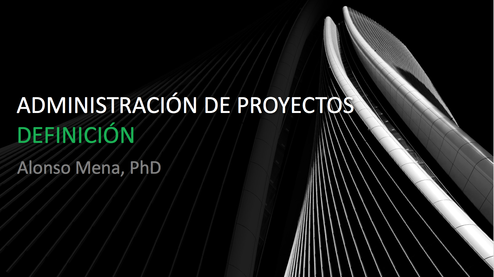
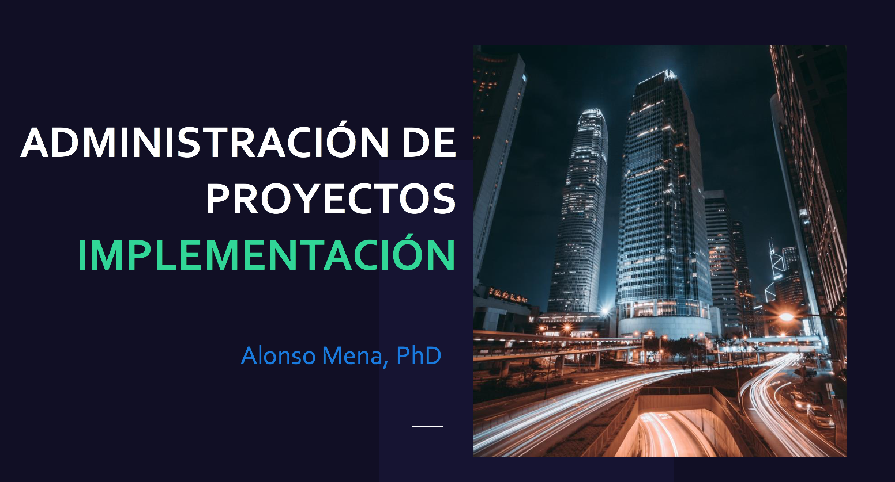

Sesión 1
Definición:
- Introducción AP
- ¿Qué es un proyecto?
- Características
- Fases en AP
- "Project Charter"
- Descripción
- Authority level
- Business Case
- Stakeholders
- Approval Req
- Deliverables
- Objetivos SMART
- Assumptions
- Constrains
- Risks
- Selección de Proyectos
- Cierre

Sesión 2
Planeación:
- Planear el equipo de trabajo
- Crear el WBS y su diccionario
- Desarrollar la lista de actividades
- Obtener el diagrama de red
- Planear requerimientos de recursos
- Estimar tiempo y costo
- Determinar la ruta crítica
- Desarrollar un calendario (schedule)
- Determinar el presupuesto
- Análisis y plan de riesgo

Sesión 3
Implementación:
- Gráfico de Gantt
- Análisis de Valor Ganado (AVG)
- Software On-line
Cierre:
- Terminación de proyectos
- Extención
- Adición
- Integración
- Inanición
- Lecciones aprendidas
- PM Tools
APOYOS
Project Charter
| Ejemplo | Descargar |
|---|---|
| Explicación del PC | Formato Estándar |
| Ejemplo PC | "Friends & Family Pry" |
| PC Extenso | Berkeley University |
| Definición | Selección Proyectos |
| Planeación | Análisis Problemas Potenciales |
| Planeación | Diccionario WBS |
| Planeación | Matriz Asignación Responsabilidades |
| Planeación | Análisis de costos |
| Cierre | Guía de cierre (UTAS) |
Web Links
| Sitio | URL Link |
|---|---|
| PMI | Project Management Institute |
| University of Tasmania | Project Management Methodology |
| Software On-line | Smartsheet |
| Software On-line | Monday |
| Software On-line | Bitrix |
| Software On-line | inTeam |
| Software On-line | Top Project Management Software |
| Software On-line | ASANA |
| Project Libre | PROJECT LIBRE |